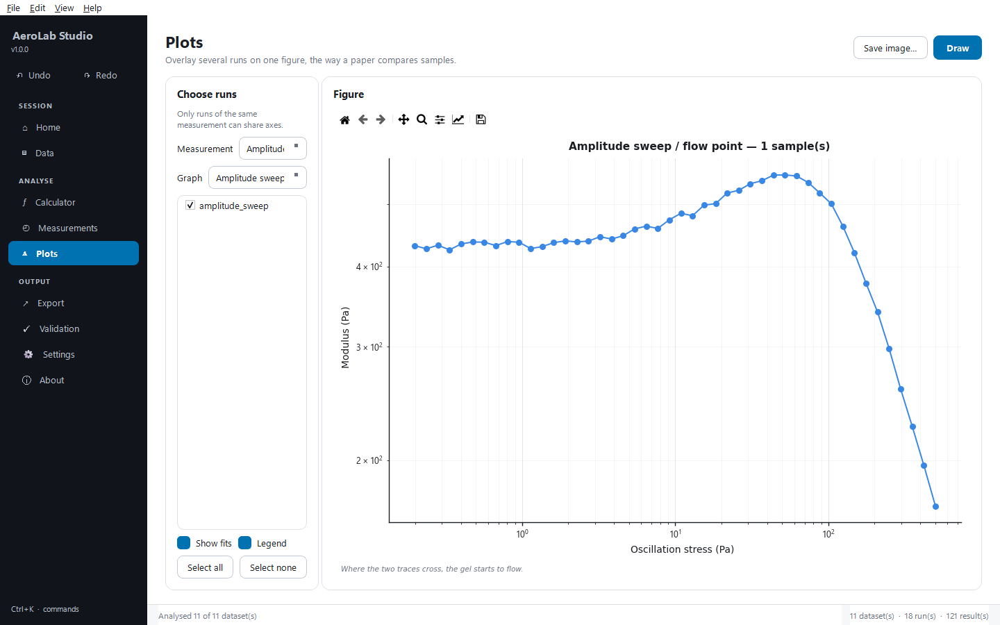
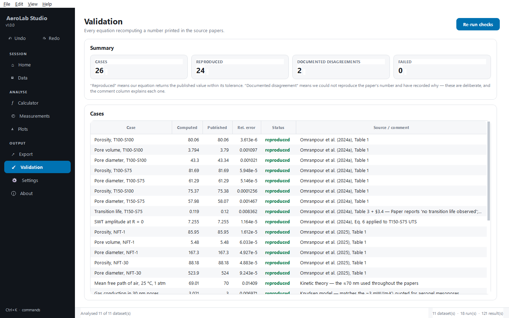
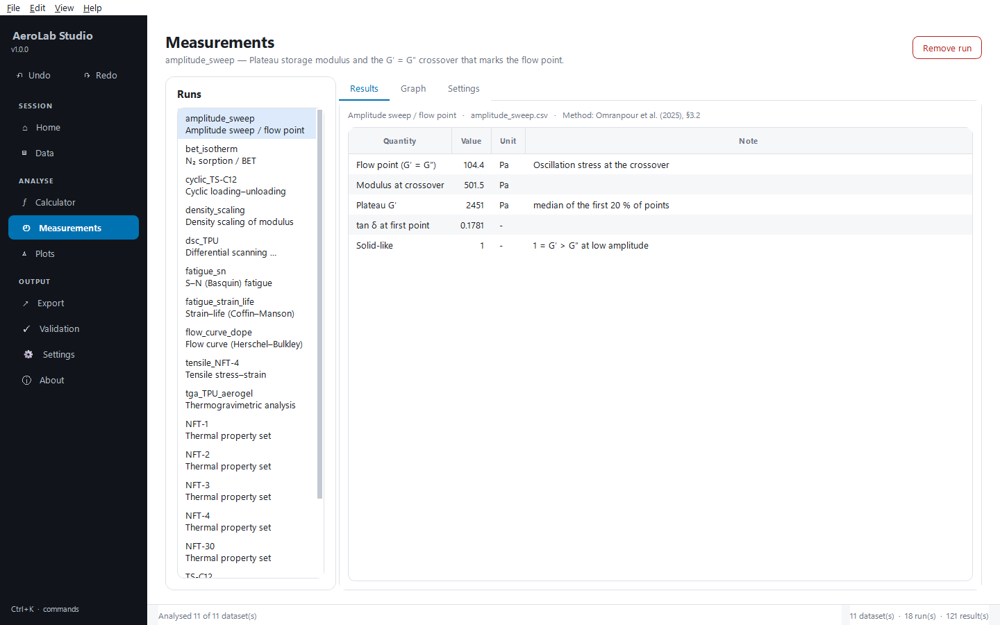
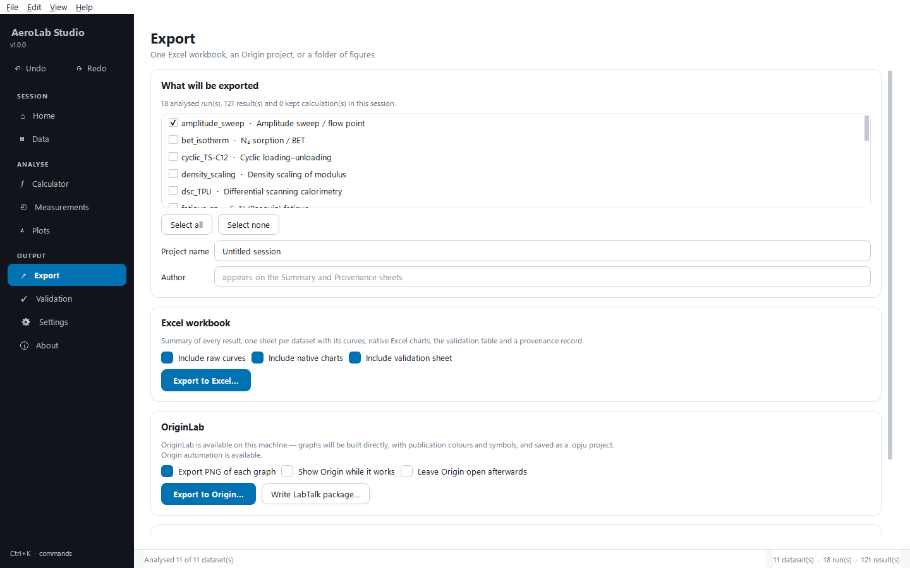

AeroLab Studio
Open source Aerogel fibresAn analysis workbench for aerogel-fibre research. It implements every equation and measurement from three papers on thermoplastic-polyurethane aerogels, applied by hand or automatically, and exports straight into OriginLab and Excel.




- 59 equationsEvery relation in the source papers, with unit conversion on each input and uncertainty propagated by central differences.
- 11 measurementsStress–strain, cyclic loading, S–N, strain–life, density scaling, TGA, DSC, thermal properties, BET, Herschel–Bulkley, amplitude sweep.
- 26 validation casesRecomputes values printed in the papers. Two are recorded as disagreements with the papers, with the reasoning stated, rather than quietly adjusted.